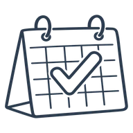
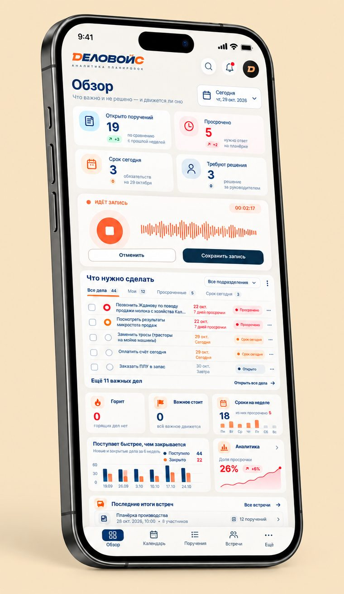

Первый вариант
20 000 ₽/месяц
20 встреч в месяц
Личный кабинет- Встреча — до одного часа
- Задачи и сроки со словами участников
- Итоги за день, неделю и год

Ведите встречу как вам удобно: он превратит разговор в задачи со сроками и поможет прийти к результату.


Транскрибатор даёт текст. ИИ-диктофон — итоги одной встречи. В CRM задачи вносят руками. Деловойс помнит все встречи и связи между ними.
| Возможность | Транскрибатор | ИИ-диктофон | CRM, таск-трекер | Деловойс |
|---|---|---|---|---|
| Расшифровка аудио в текст | ||||
| Аналитика разговора без ручного ввода | ||||
| Саммари по итогу встречи | ||||
| Помнит всё, что обсуждали на прошлых встречах | вручную | |||
| Видно, что обещали и не сделали | ||||
| Итоги за день, неделю, месяц и год | вручную |
Цены предварительные. Встреча — разговор на рабочем месте, совещание или планёрка.
20 000 ₽/месяц
20 встреч в месяц
Личный кабинет50 000 ₽/месяц
70 встреч в месяц
Личный кабинет70 000 ₽/месяц
100 встреч в месяц
Личный кабинетЗаписи, текст и задачи хранятся на серверах в России. У каждой компании своя отдельная база, другие компании её не видят. Для расшифровки запись передаётся сервису распознавания речи, текст для разбора — нейросети, которая работает на серверах в России. Мы не продаём данные и не используем их для рекламы. Аудио хранится не больше 90 дней, потом удаляется, текст остаётся.
У каждой задачи есть цитата со встречи и время в записи. Если подходящих слов в тексте нет, задача не появляется. Сроки, суммы и имена берутся только из разговора: не назвали срок — задача остаётся без срока. Если сервис не уверен, он ставит пометку «проверьте». Неудачный разбор можно отменить целиком.
Нет. Она работает по инструкции и не обучается на ваших встречах. Всё, что сервис «помнит» о компании, — это ваш список дел и ответы о компании в кабинете.
Записывать встречи или нет, решает владелец кабинета. Он предупреждает участников о записи и отвечает за то, чтобы запись была законной. Сервис не создаёт и не хранит голосовые отпечатки для узнавания людей.
Данные можно удалить по вашему письму. После закрытия кабинета они удаляются в течение 30 дней, если закон не требует хранить их дольше. Подробно — в правилах обработки личных данных.
Создайте кабинет. Первую встречу можно записать прямо в нём.